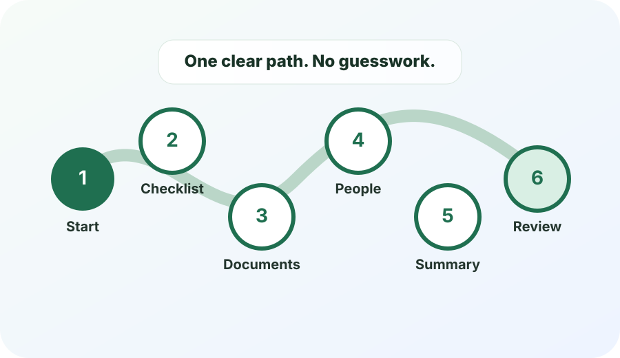

Simplest path
Use the site in six steps.
This is the cleanest way through Will Checklist. Do one step, mark it done, then continue to the next step.

Use safe notes
- Labels: “life insurance policy”
- Locations: “blue folder in desk”
- Questions: “ask about witnesses”
Never enter secrets
- Passwords, PINs, safe codes
- SSNs or full account numbers
- Private keys or seed phrases
Your next recommended step
Next: Setup
Answer a few plain-English questions so the site can point you to the right first task.
0 of 6 core steps done
Core path
One simple sequence
Advanced tools still exist, but most users should finish this path first.
When to stop and ask
Use this site to organize, not to solve legal questions.
If something feels uncertain, write down the question and bring it to a licensed attorney, legal aid organization, official court resource, or reputable will-making service.
Common stop-and-ask signals
- Children from more than one relationship
- Disagreements about guardians, executors, or beneficiaries
- Business ownership or out-of-state real estate
- Special-needs planning, trusts, Medicaid, taxes, or creditor concerns
- Someone pressuring you to change documents